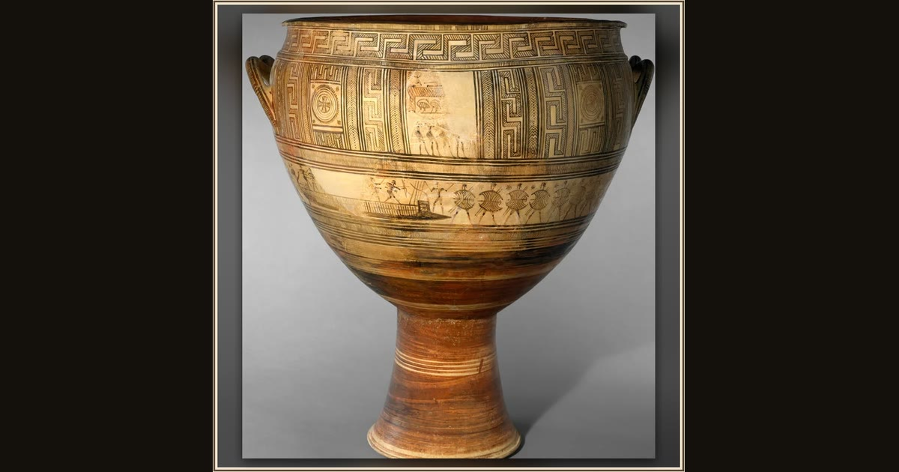

Terracotta krater
Attributed to the Workshop of New York MMA 34.11.2 (Greek, Attic) · ca. 775 BCE · met
A Greek terracotta mixing bowl carries shield-bearing figures and a long ship, echoing the ships and captains named as the catalogue begins (2.493). Explore its place in Homer's Iliad, Book II, line 493.